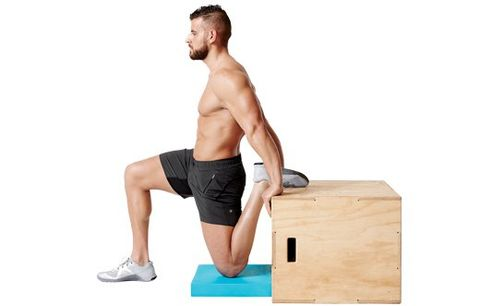

Alongamento para homens
2021.07.01 00:43
MENU
Nutrição e Fitness
Menu Principal
Os principais links do melhor conteúdo. Home Juan Alves Anuncie ContatoGuia: Aprenda a se alongar corretamente
Independente de ser praticante de atividade física regularmente, o alongamento é indicado para todos. Por isso confira alguns dicas e sugestões, e fique por dentro desse assunto!
CONTINUA DEPOIS DA PUBLICIDADEAntes de tudo, porque alongar ?
O alongamento “estica o músculo” e auxilia na preparação de atividades mais vigorosas como musculação ou o simples fato de levantar da cama após uma noite de sono, assim como também contribui no relaxamento após o exercício.
O ato de se alongar é indicado antes e após o exercício físico , e deverá ser realizado em uma intensidade moderada. Cada um possui uma determinada flexibilidade e o grau de incômodo é o sinal deste limite.
Os movimentos devem ser feitos com calma, sem rapidez, para evitar estiramentos (lesão). A permanência na posição estática (parada) deve ser de até 20 segundos aproximadamente.
CONTINUA DEPOIS DA PUBLICIDADE
Acima alguns exemplos de alongamento que podem ser realizados no seu dia-a-dia. Durante os movimentos a respiração continua normalmente.
Jamais prenda a respiração ou alongue de modo que sinta dor ou desconforto severo.
Para quem vai pegar pesado na academia, tão importante quanto o alongamento é o aquecimento antes da musculação. Para realizá-lo você poderá rotacionar o pescoço, na sequência ombros, seguindo para cotovelo, punho, quadril, joelho e tornozelo, finalizando com um trote de 10 a 20 minutos (poderá ser bicicleta ou elíptico também).
Na dúvida, sempre procure orientação de um profissional de educação física .
Leia também
Homem Pode Malhar Bunda?
Pilates Em Casa para Iniciantes, Como Fazer?
EXERCÍCIOS EM CASA ALTERNATIVOS A CORRIDA #SeCuideEmCasa
Fábio Brito says:
25 de outubro de 2012 at 13:21Olá, sei que o post é tanto quanto antigo, porém como instrumento de pesquisa, vi que ainda é bem válido. Então aqui vai minha contribuição:
Cuidado quando o assunto é alongamento. Existem dois tipos, Estático (o demonstrado acima) e o Dinâmico.
O Estático, não deve ser feito por pessoas que praticam Hipertrofia, corrida, ou qualquer tipo de exercício intenso, ANTES ou DEPOIS da atividade física. Explico:
O alongamento estático baseia-se na técnica para aumentar a flexibilidade, ao se manter uma posição com o músculo desejado na sua maior extensão possível, por um período de 20 a 30 segundos. O alongamento dinâmico consiste na reprodução de movimentos corporais iniciados em ritmo lento e confortável, esse ritmo e amplitude devem ser aumentados até que se consiga fazer o movimento rapidamente, os exemplos serão dados passo a passo posteriormente.
Vamos conhecer agora um pouco mais sobre fibras musculares. Basicamente são conhecidos dois tipos de fibras, fibras de contração lenta e contração rápida. Convencionou-se chamá-las de modo mais didático respectivamente Tipo I e Tipo II, isso porque as do tipo II podem ser desmembradas em II a, II b e II c, de acordo com funções motoras anaeróbicas.
Fibras tipo I – são fibras que possuem altos níveis de mioglobina, carregam muitas mitocôndrias, possuem alto poder de carregar oxigênio, ou seja, são responsáveis pelo desempenho de atletas fundistas.
Fibras tipo II a – possuem capacidade tanto aeróbica quanto anaeróbica, sendo assim consideradas intermediárias.
Fibras tipo II b – possuem um maior potencial anaeróbico, sendo a verdadeira fibra rápida, ou seja, mais presentes nos atletas de explosão muscular.
Fibras tipo II c – são mais raras podem participar da reinervação ou da transformação das unidades motoras (unidade motora correspondente ao neurônio motor e as fibras musculares inervadas por ele).
É certo abandonar o alongamento tradicional? Apesar de ser receitado regularmente como uma forma de prevenir lesões, o alongamento estático antes das atividades físicas pode ser a pior das estratégias. Pelo fato de forçar o músculo alvo a relaxar, ele fica enfraquecido temporariamente, o alongamento estático também reduz o fluxo sanguíneo e diminui a atividade do sistema nervoso central, isso inibe o poder do cérebro de se comunicar com os músculos, o que limita a capacidade de gerar força, ou seja, nunca faça alongamento estático antes de malhar ou praticar esportes.
Mas, antes de você abandonar para sempre o alongamento estático, saiba que ele tem o seu valor, isso porque melhora sua flexibilidade “passiva”, é bom para esforços não-atléticos do dia-a-dia, como curvar-se, ajoelhar e agachar, o que você precisa saber é o alongamento certo para a hora certa.
O alongamento estático pode e deve ser feito a qualquer hora do dia, menos antes de praticar esportes, para melhorar a flexibilidade geral. Faça duas vezes por dia todos os dias, se a freqüência for menor, você não mantém o que já conseguiu em flexibilidade. Faça apenas um alongamento para cada músculo mantendo a posição 20 a 30 segundos, os avanços na flexibilidade são conseguidos no primeiro alongamento, repetir os mesmos movimentos dá poucos resultados. Siga essas regras para aqueles alongamentos clássicos como: puxar a perna para trás para alongar a parte anterior da coxa; se inclinar tentando encostar as mãos nos pés para alongar a parte posterior da coxa; se inclinar contra a parede com uma das pernas atrás para alongar a panturrilha, etc. Esse tipo de alongamento aumenta sua flexibilidade somente naquela exata postura, quando se move em baixa velocidade, se você for contorcionista tudo bem, mas pouco adianta para a flexibilidade de que você precisa nos esportes e treinamentos com peso, atividades que exigem que os músculos se alonguem rapidamente em várias posições.
Por isso o alongamento dinâmico é componente necessário para um programa de flexibilidade “ativa”, o tipo ideal para todos os esforços atléticos.
O alongamento dinâmico estimula o sistema nervoso central e aumenta o fluxo de sangue, aumentando assim a produção de força. Portanto, é o aquecimento ideal para qualquer atividade. Quando você faz com regularidade tanto o alongamento estático quanto o dinâmico, uma parte do ganho em flexibilidade de um tipo será transferida para o outro.
Como e quando fazer o alongamento dinâmico? Como aquecimento antes de qualquer tipo de prática esportiva, para melhorar seu desempenho e reduzir o risco de lesões.
Faça a seguinte rotina de exercícios, você provavelmente já os conhece: rotação dos ombros com os braços estendidos nos sentidos para frente e para trás; rotações do tronco; polichinelos; simulação de corrida saltando alternadamente tentando tocar os calcanhares nas nádegas; fazendo uma marcha alta saltando e levantando os joelhos para cima; faça a mesma marcha alta fazendo rotações do quadril levando os joelhos de fora para dentro assim como de dentro para fora (como você costuma ver os jogadores de futebol fazendo para aquecer); faça tiros curtos de corrida para frente, para os lados e para trás. Lembre-se sempre de começar com amplitudes pequenas e os movimentos feitos de forma lenta, vá aumentando gradualmente tanto a amplitude quanto a velocidade respeitando sempre os seus limites.
Fonte: http://www.acoruja.com.br/web/index.php?option=com_content&task=view&id=615&Itemid=16
ResponderAlyson Jones E. de Alencar says:
10 de setembro de 2012 at 14:54Bjo Mari!
ResponderAlyson Jones E. de Alencar says:
10 de setembro de 2012 at 14:54Bjo Mari!
ResponderProfª. Vânia Almeida says:
10 de setembro de 2012 at 13:07 Muito boa matéria. Muitos ignoram os alongamentos, porém estes tem um papel fundamental para nossa saúde, principalmente quem prática exercícios regulares.
Bjss
Vânia
http://Www.cuidandodocorpo.com
Juan Alves says:
31 de março de 2010 at 21:40O blogspot anda me gongando, liberou e retirou (talvez tenha voltado) o comentário da Mari, então respondendo a ela:
Esse post contém alongamentos principalmente para antes de uma atividade física, os únicos que eu recomendaria para o dia a dia são os números 13, 14, 15 e 16!
Bjo Mari!
ResponderMari says:
31 de março de 2010 at 15:47 Alongar é booomm mas eu raramente faço isso.
Bjs.
Deixe um comentário Cancelar resposta
Posts Recentes
200 Cortes de Cabelo Masculino do Crespo ao Liso: só Corte Masculino Estiloso!
#BelezaMasculinaCabelo Branco Precoce: por que jovens têm cabelo branco?
#BelezaMasculinaTênis LEGO da Adidas é o Sneaker Montável que você sempre quis ter
#ModaMasculinaComo Depilar o Saco: depilação íntima masculina sem tabu
#BelezaMasculinaTatuagem Masculina: 150 ideias de tattoos estilosas
#BelezaMasculinaTudo sobre Cabelo Masculino Ondulado
#BelezaMasculinaLINKS ÚTEIS
Sobre Anuncie Conosco Grupo VIP no TelegramACOMPANHE TAMBÉM
Bruno Figueredo Bar Metrossexual Cotidiano Masculino Dandi Moderno Macho Moda Moda para Homens xvideos xvideos Brasil xvideo porno xvídeos xvideos novinhas x videos Porno Gratis xvideo Br vapersPrimeiro site de beleza masculina do Brasil | 2010 - 2020
